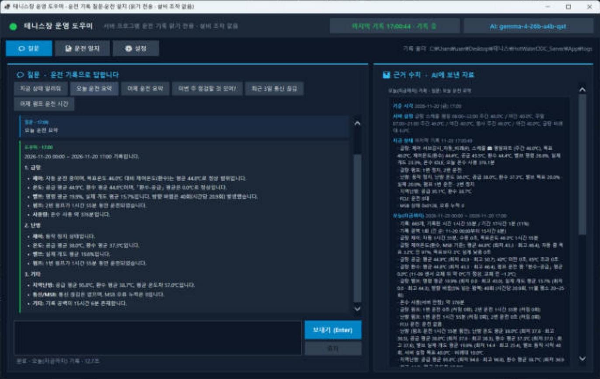
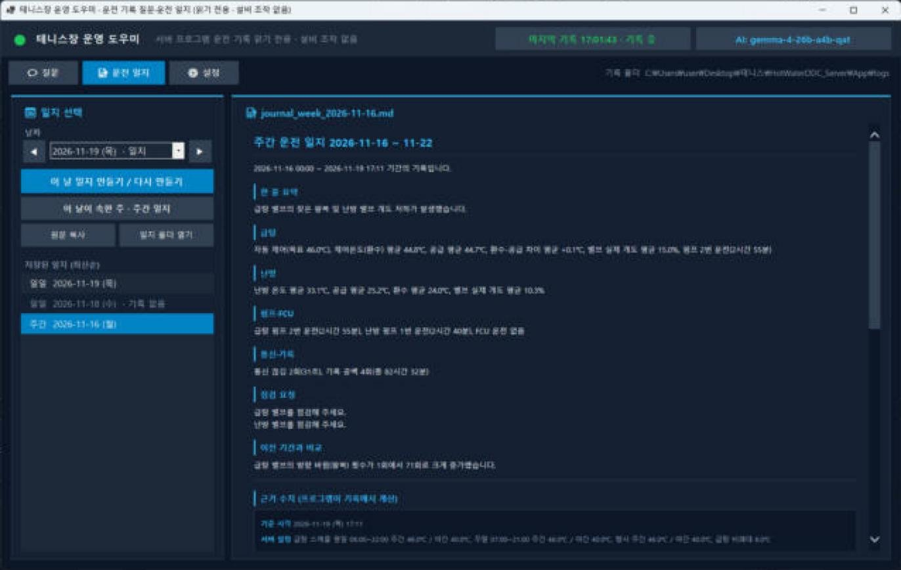
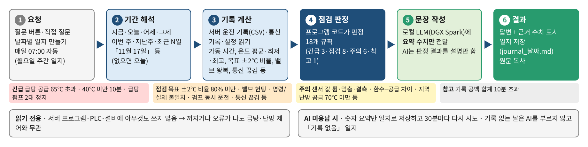

에너지 · 자동제어
테니스장 급탕·난방 자동제어 운영 도우미 챗봇
테니스장 자동제어 서버의 운전 기록을 읽어 질문에 답하고 일일·주간 운전 일지를 자동으로 쓰는 운영 도우미(OpsAssistant)를 자체 개발했습니다. 이상 여부는 프로그램이 기록으로 판정하고 AI는 그 결과를 문장으로 설명만 하도록 설계해, 데이터에 없는 내용을 지어내지 않습니다.
- 18개점검 판정 규칙
- 약 13초질문 답변 시간
- 매일 07:00운전 일지 자동 작성
- 3,388만 원SW개발비 절감(부가세 포함)




- 운전 기록으로 답하는 질문
- 「오늘 운전 요약」, 「이번 주 점검할 것 있어?」 같은 질문의 기간을 해석해 운전 기록과 통신 기록을 계산하고, 답변 옆에 근거 수치를 함께 보여 줍니다.
- 18개 규칙 자동 점검 판정
- 긴급 3개, 점검 8개, 주의 6개, 참고 1개 규칙으로 급탕 공급 온도 과열, 목표온도 유지율 저하, 센서 값 튐·멈춤, 통신 끊김 등을 판정합니다.
- 일일·주간 운전 일지 자동 작성
- 매일 07:00 일지를, 월요일에는 주간 일지를 씁니다. 실제 기록으로 시험한 주간 일지에서 급탕 밸브 왕복이 늘어난 것을 스스로 짚어 냈습니다.
- 사내 로컬 LLM으로 보안 확보
- 사내 AI 서버(DGX Spark)의 로컬 LLM에 요약 수치만 전달해, 운전 기록이 외부로 나가지 않습니다.
- 읽기 전용으로 안전하게
- 서버 프로그램·PLC·설비에 아무것도 쓰지 않아 도우미가 꺼지거나 오류가 나도 급탕·난방 제어에는 영향이 없습니다. AI가 응답하지 않으면 수치 요약만 저장하고 30분마다 다시 시도합니다.
- 자동제어 시스템과 연계
- 운전 기록은 테니스장 급탕·난방 자동제어 프로그램이 쌓은 49개 항목 기록을 그대로 읽습니다.

